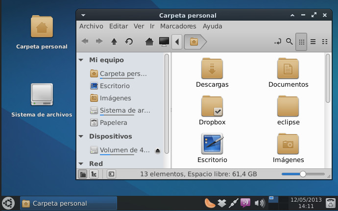
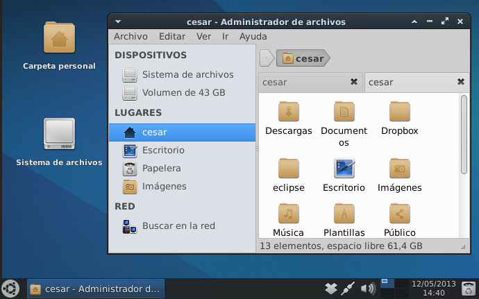
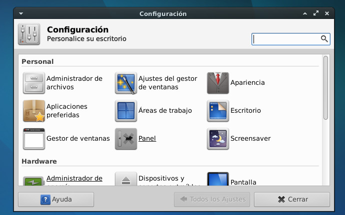
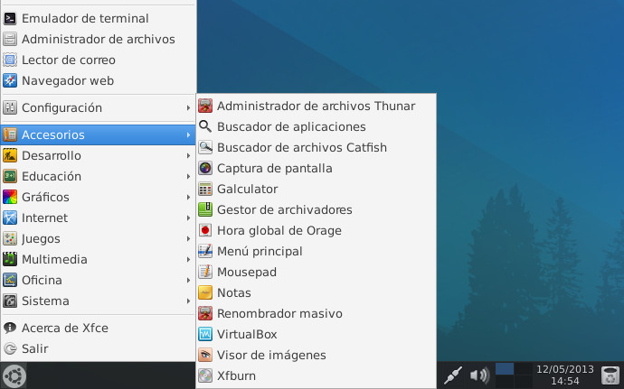
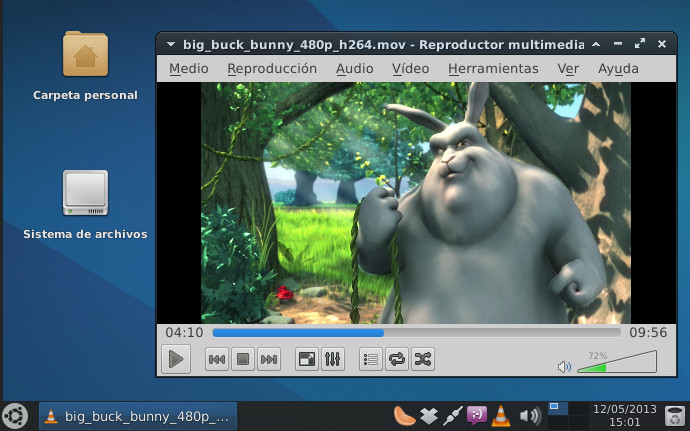
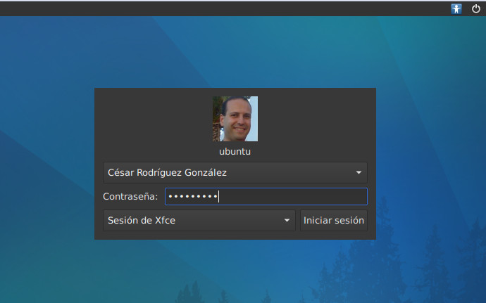

     
Introducción
Este script realiza la instalación del escritorio Xfce y un conjunto de programas según necesidades del usuario partiendo de la instalación de un Ubuntu Server base.
Características que ofrece
- Instalación de escritorio Xfce con paquetes necesarios.
- Instalación desatendida de aplicaciones.
- Log de posibles errores durante el proceso de instalación.
- Posibilidad de apagar, reiniciar o mostrar log de errores al finalizar el proceso de instalación.
- Instalar sólo las utilidades seleccionadas y necesarias por el usuario.
- Ofrece una gran variedad de programas de diferentes tipos.
- Configuraciones automáticas de aplicaciones para dejarlas preparadas para su uso.
¿Por qué usar este script frente a otras alternativas?
- No es una distro. Es un script. Rápido de descargar y usar.
- Es válido para hogares, oficinas y servidores.
- Se puede instalar en diferentes versiones de Ubuntu: 12.04, 12.10 y 13.04.
- Menor consumo de recursos hardware del sistema.
- Mayor personalización de aplicaciones a instalar.
- Mayor periodo de mantenimiento del sistema operativo al tratarse de Ubuntu Server.
- Ahorra tiempo de configuración posterior a la instalación de aplicaciones.
- Mayor dinamismo, ofrece aplicaciones de diferentes escritorios. No se limita sólo a Xfce.
- Tema de escritorio moderno (iconos Faenza y tema GreyBird).
- Instalación automática de repositorios de terceros.